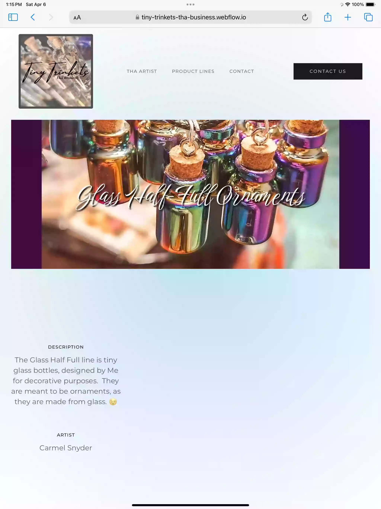
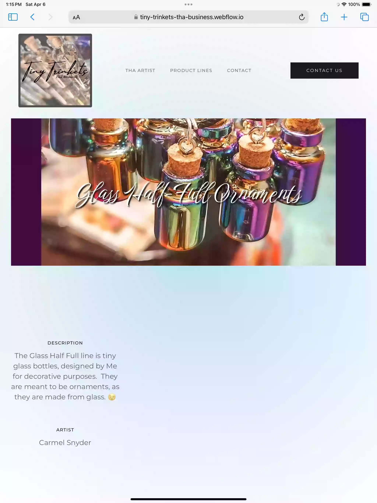
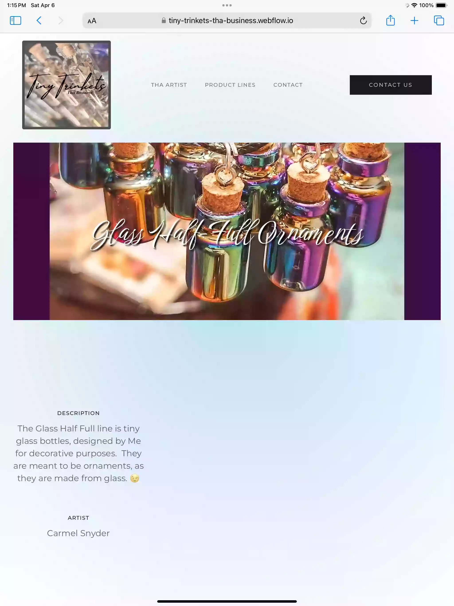

Small websites. Done fast. Under $3k. This is what I build - landing pages, portfolios, business sites. Every project here was delivered on time and actually works.

Small business sites, portfolios, and digital products. Every project delivered on time, under $3k, and functional from day one.
Cleaning service site built for a growing business. Clean, minimal design that doesn't get in the way - just easy booking and clear service info. Mobile-friendly because most customers book from their phones.
What worked: Simple navigation, fast load times, and prominent booking CTA. The business grew so much after launch they had to hire additional help to keep up with demand.
Alternative navigation style for Too Good Maids. Shows how I approach personal, user-focused design with custom illustrations.
Portfolio site for handcrafted trinkets and jewelry. Built to showcase products beautifully while working for both retail customers and wholesale vendors. Image-heavy design with smooth galleries and easy navigation.
What worked: Big, clear product photos. Clean layout that doesn't compete with the jewelry. Separate sections for retail vs. wholesale so both audiences get what they need fast.
Pet care and grooming site for a local business. Warm, welcoming design with easy-to-find service info and pricing. Built to make booking simple and showcase what makes them different from big chain groomers. The business has since closed, but the site delivered exactly what they needed during their operation.
What worked: Friendly design that matches their personal approach. Clear service descriptions so customers know exactly what they're getting. Mobile-optimized because pet owners book on the go.
Petfluencer portfolio site for Arlo, a blue Doberman with an Etsy shop and growing social media following. Fun, personality-driven design that shows off Arlo's character while making it easy to shop his merch and connect on social.
What worked: Bold design that matches Arlo's vibe. Direct links to Etsy and social profiles. Simple navigation that doesn't overthink it - people want to see the dog and buy the merch.
Full Shopify eCommerce site for a bulk foods store. Custom theme built from scratch, payment integration, mobile-optimized checkout, product filtering and search. Everything needed to run an online store that actually works. Original design included outdoor living product integration, which the client later removed.
What worked: Clean product pages that load fast. Easy filtering so customers can find what they need. Mobile checkout that doesn't frustrate people. Custom theme that looks professional without the Shopify template feel.
Automated fantasy football newsletter subscription service. Built entirely from scratch - custom automation, Stripe payment integration, mascot builder tool, and weekly PDF generation. This isn't a website, it's a full product that sends personalized recaps to fantasy football leagues every week.
What worked: Complete automation - subscribers get their custom newsletter without any manual work. Stripe integration that actually works. The mascot builder lets leagues customize their experience. It's a subscription service that runs itself. See a sample PDF.
Need a small website? I build landing pages, portfolios, and business sites for under $3k. 2-4 week turnaround. Western Kentucky based, working everywhere.

I build small websites for people who need them done right. No agency overhead, no 6-month timelines. Projects under $3k, delivered in 2-4 weeks. Based in Western Kentucky, working with clients everywhere.
{kind=link}
{kind=link}
{kind=link}
{kind=link}
{kind=link}
{kind=link}